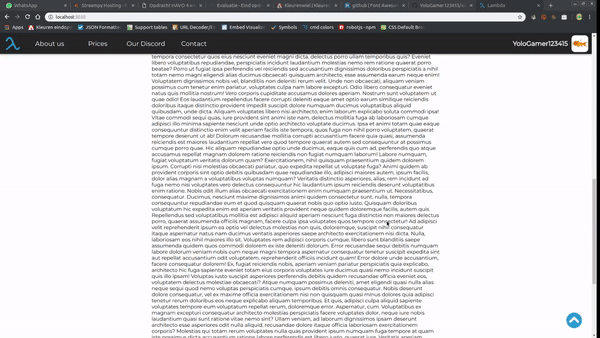
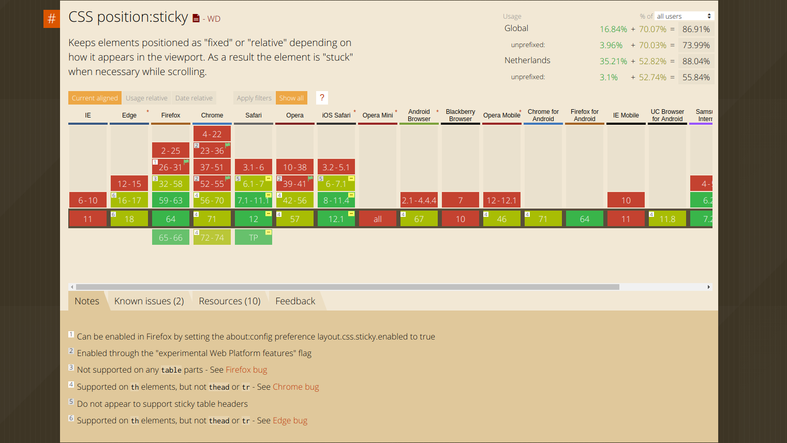

Evaluatie
Een header met dropdown menuutjes.

Het ging eigenlijk best goed. Ik begon, zoals ik altijd doe, met de header. Ik heb standaard 2 headers waar ik uit kies om te maken. Deze die ik op deze website heb gedaan (header zonder dropdown menuutjes en bewegende balkjes als je over een link gaat) of een header met dropdown menuutjes maar zonder fancy balkjes (zie plaatje). Daarna heb ik er voor gekozen om de header onder de landing-page (de grote foto die je ziet wanneer je op de pagina komt) te zetten en hem later bovenaan de pagina vast te zetten. Wat ik soms ook doe is met een erg grote header beginnen en dan terwijl je scrollt hem kleiner maken. Na de header heb ik het menu gemaakt voor mobiele gebruikers (voor als je het nog niet wist, de website is responsive :D). Hier begon ik een klein probleempje te krijgen. Normaal doe ik het dat ik het menu heb en een checkbox linksboven het scherm uit het zicht. Ik heb dan in de header een icoontje voor het menu en in het menu zelf een sluit icoontje. Die icoontjes stop ik dan in <label for="id-van-checkbox"> ... </label> wat er voor zorgt dat wanneer je op één van die icoontjes klikt, en dus op de label, dat je de checkbox afvinkt of weer wegvinkt. In css heb je voor een checkbox het pseudo class checkbox:checked wat ik dus gebruik om te kijken of het menu zichtbaar zou moeten zijn. Als hij dus is afgevinkt dan laat ik het menu van rechts inschuiven, is hij niet meer afgevinkt, dan schijf ik het menu weer weg. Eerst werkte dit gewoon, maar toen ik wat meer dingen had toegevoegd aan de website kwam het menu opeens niet meer tevoorschijn. Ik heb hier nog een tijdje mee lopen hannessen en heb het uiteindelijk maar met JavaScript gedaan.
Header
Support table van position: sticky.
position: sticky.')">
Zoals ik al had gezegd. Voor de header had ik er voor gekozen om hem stiky te maken. Zoals je in de support table kan zien (zie plaatje) supporten alle goede browsers position: sticky, maar toen ik de header dat had gegeven in de css, pleef hij niet "plakken". Ik vond dit heel raar en raakte er erg gefrustreerd door en heb uiteindelijk ook nog een tijdje dingen geprobeerd om het op te lossen, maar dat is uiteindelijk niet gelukt, dus toen heb ik het maar met JavaScript gedaan. Een paar redenen waarom ik het liever niet met JavaScript doe:
- Wanneer je van groot scherm naar telefoon switcht (via chrome dev tools zit er linksboven een knopje daarvoor) en vice versa dan kan het zijn dat de header bovenaan vast blijft zitten in plaats van wanneer de landing-page komt los te gaan.
- Wanneer de grote van het scherm wordt aangepast is de
header.offsetTop niet meer correct, omdat de grote van het scherm word aangepast, maar daarmee dus ook de grote van de landing-page.
De eerste is helaas niet op te lossen (denk ik, ik ben er nu in ieder geval nog steeds niet achter), maar de tweede is wel op te lossen. In JavaScript wordt het event
window.onresize gecallt wanneer de grote van de browser wordt aangepast. In dit event pas ik dus iedere keer wanneer de grote wordt aangepast ook de offsetTop aan.
/* main.js, lijn 23 - 26 */
window.onresize = () => {
no = n.offsetTop
o = window.innerHeight - 80
}
Footer
Na de header ging ik aan de footer werken. Ook deze is gewoon een standaard footer die ik altijd maak. Helemaal onderaan een iets donkerder balkje met de copyright en naam en bovenaan twee vakjes. Rechts, of beneden op de telefoon, waar je me nog meer kan vinden (sociale media en dergelijke) en links, of bovenaan op de telefoon, heb ik in dit geval voor gekozen om daar nog een keer linkjes naar alle pagina's neer te zetten. Alle icoontjes die ik op mijn sites gebruik maar ik (nog niet) zelf, maar ik haal ze van
Font Awesome. Dit is een website waar onder andere allemaal icoontjes op staan en waarvan de meeste gratis te downloaden zijn.
Dark theme
Na de footer bedacht ik dat het misschien wel leuk zou zijn om een dark theme te hebben aangezien ik niet zonder kan, dus ik heb een dark theme toegevoegd. Wanneer je achter de url ?dark toevoegd dan zou de dark theme aan moeten gaan. Dit geld trouwens voor alle pagina's.
Tekst
Omdat ik zelf niet echt veel wist over HTML, css en JavaScript heb ik eigenlijk de Wikipedia pagina's gekopieerd en weer geplakt op mijn website. Ik weet niet of dit mocht, maar ik heb het toch wel gedaan, want ik heb wel graag wat op mijn website staan qua informatie. Ik heb trouwens de code-blokjes op deze pagina niet zelf gemaakt. Dit is een JavaScript library genaamt
code-prettify gemaakt door Google.
Plaatjes
Zoals je misschien al had gezien hebben de plaatjes een klein balkje met een korte omschrijving bij zich staan en als je op het plaatje klikt wordt hij vergroot. Dit is iets waar ik wel even mee bezig ben geweest omdat ik het en makkelijk voor mezelf wilde maken en omdat het niet deed wat ik wilde. Om een plaatje op de pagina te krijgen moet ik op de volgende manier de HTML schrijven:
<div class="image">
<span>De beschrijving van het plaatje.</span>
<img src="link" alt="De beschrijving van het plaatje" onclick="viewImage('link', 'De beschrijving van het plaatje.')" />
</div>
Het plaatje staat standaart links in de container. Als ik de
<div class="image"></div> nog een class "right" geef, dan gaat het plaatje rechts in de container staan. Het zelfde geld voor de beschrijving van het plaatje (
<span> ... </span>). Hij staat standaard linksonderaan, maar door de classes "right" en/ of "top" toe te voegen, kan ik hem ook bovenin of rechts neerzetten.
Zoals je ziet heeft de img ook een
onclick="viewImage( ... )". Dit callt de functie "viewImage" wanneer er op het plaatje wordt geklikt. Dit zorgt er dan voor dat het plaatje groter wordt weer gegeven. Als je het werkent wilt zien dan kan je op een van plaatjes wat verder naar boven klikken.
Landing-page plaatjes
De plaatjes die je ziet op de landing-page's heb ik allemaal zelf gemaakt, behalve de foto op de evaluatie pagina, want die heb ik van het internet gepakt. Ik heb de foto's iets laten bewerken door een vriend om ze wat donkerder te maken. De foto op de home pagina is trouwens niet van deze website, maar van de bot die ik voor mijn eigen bedrijfje had gemaakt, wat weer door een minifier is getrokken.
Uiteindelijk
Er zijn nog wat kleinere dingetjes waar ik over zou kunnen vertellen wat er goed en/ of fout ging, maar dat wordt dan te veel om hier neer te zetten, dus ik had besloten om alleen de grootste en meest opvallende dingen hier neer te zetten. Een paar voorbeeldjes daarvan zijn de scrollbar en de "weer omhoog"-knop, maar dat zijn kleine dingetjes vergeleken met bijvoorbeeld de header en de footer.